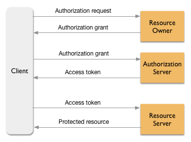

Desarrollo web orientado a API's y Microservicios
Un enfoque moderno
Clase 8
Diego Acuña Rozas
Ing. Civil en Informática - UTFSM
diego.acuna@mailbox.org
Clase de hoy
Nos vamos a enfocar en la seguridad:
- Conceptos básicos de seguridad en API's
- Autenticación vs Autorización
-
OAuth 2.0
- Visión general
- Tipos de flujos
- Seguridad en nuestra app rails
- Consultas y comentarios
Seguridad en API's
Ya hemos aprendido a construir el backend de nuestra API y además hemos estudiado tecnologías para construir el frontend de nuestra aplicación final.
Hasta este momento, no nos hemos concentrado en la seguridad de nuestra aplicación. En esta clase estudiaremos los mecanismos tradicionales y protocolos para asegurar nuestra aplicación.
Comencemos analizando algunas de las problemáticas básicas a las que nos enfrentaremos al desarrollar una API.
Seguridad en API's
Tradicionalemente, las aplicaciones web utilizaban mecanismos basados en sesiones para mantener la seguridad del sistema.
¿Por qué este mecanismo no es útil al construir una API?
REST es Stateless
Recordemos que REST es Stateless, es decir, cada petición HTTP que se realice al servidor debe estar autocontenida => No se necesita de ninguna información adicional para procesar la petición.
Entonces, no pueden haber sesiones!
REST es Stateless
REST = Representational State Transfer, es decir, el estado se transfiere en cada petición y no es almacenado en el servidor. Esto es bueno ya que permite escalar el servidor sin preocuparnos de almacenar el estado de cada cliente.
Dado que desde un comienzo nos interesó el hacer que el cliente haga más trabajo, le dejaremos el manejo del estado del cliente al mismo cliente.
¿Cómo podemos entonces asegurar nuestra aplicación? Primero tratemos de definir que es exactamente lo que queremos hacer...
Autenticación vs Autorización
En una aplicación web podemos definir principalmente dos requerimientos de seguridad:
- Autenticación: queremos asegurarnos que el cliente que está accediendo a recursos de nuestra aplicación es efectivamente el dueño de las credenciales. Por ejemplo, Facebook quiere asegurar que el usuario que está listando los post de su muro en la página http://www.facebook.com es efectivamente el dueño de ese muro. ¿Por qué querríamos hacer esto? ¿es posible que sea otro cliente?
- Autorización: queremos que solo clientes con la autorización necesaria puedan acceder a determinados recursos.
Autenticación vs Autorización
¿Notan la diferencia?
Se produce debido a que nuestra API no es una aplicación web sino que una interfaz a un conjunto de recursos.
Mecanismo sencillo de seguridad
Para entender como funcionan los protocolos de seguridad en API's, veamos una implementación sencilla (e ingenua) de como asegurar una API. El concepto clave es token. La idea:
- Un usuario realiza una petición de autenticación con su username/password a una ruta de la API (por ejemplo: /auth/sign_in). Para esto puede utilizar una petición POST.
- La API valida las credenciales y si son correctas retorna un token, el cual es un string de un largo adecuado generado aleatoriamente. Este token es almacenado por el servidor y le indica que si un usuario quiere solicitar algún recurso, debe especificar dicho token.
Mecanismo sencillo de seguridad
- Posteriormente, si un usuario desea por ejemplo solicitar sus posts, entonces deberá realizar la petición y adjunta mediante un HTTP Header su token.
- La API al recibir la petición, para verificar si el usuario que la realizó efectivamente tiene los permisos necesarios validará que el token de la petición es exactamente el mismo almacenado para el usuario dueño de los recursos.
¿Ven algunos problemas en este mecanismo? ¿Funciona?
OAuth 2.0
Los mecanismos de seguridad de API's se basan en tokens (más sofisticados que nuestra propuesta inicial). OAuth es un protocolo de autorización muy popular utilizado actualmente para autorizar recursos de una API. Partamos con la definición de su especificación.
"The OAuth 2.0 authorization framework enables a third-party application to obtain limited access to an HTTP service, either on behalf of a resource owner by orchestrating an approval interaction between the resource owner and the HTTP service, or by allowing the third-party application to obtain access on its own behalf."
OAuth 2.0
- Permite que otras aplicaciones accedan a recursos de nuestra API con permisos de sus dueños (de manera similar a como lo hace Facebook que permite utilizar su API en otras aplicaciones).
- Notar que hace énfasis en que el framework permite accedo a una third-party application. Debemos pensar en términos de aplicaciones que acceden a recursos (no personas).
Esto permite que un usuario le de permisos a otras aplicaciones a que accedan a sus recursos sin la necesidad de tener que divulgar sus contraseñas. Esto es AUTORIZAR.
OAuth 2.0 - Conceptos claves
Veamos algunos conceptos claves del protocolo
- Resource Owner: generalmente una persona que es dueño de algún recurso manejado por una API. Es capaz de dar acceso a dichos recursos.
- Client: puede ser una aplicación web (frontend), una aplicación móvil, etc. La aplicación realiza peticiones a la API para acceder recursos públicos o de un client. El resource owner debe autorizar al client para que pueda acceder a sus recursos.
- Resource Server: es el servidor que contiene la API que construímos.
- Authorization Server: servidor que implementa el protocolo OAuth 2.0 y es responsable de la autorización y de entregar los access token que le dan a una aplicación acceso a los recursos de un usuario. Puede ser el mismo resource server.
OAuth 2.0 - Conceptos claves
Veamos algunos conceptos claves del protocolo
- Access Token: un conjunto de caracteres aleatorios que funcionan como una credencial utilizada por el client para acceder a recursos privados de un resource owner.
- Protected Resource: es un recurso (datos) que pertenecen a un resource owner. Por ejemplo, los datos de perfil de un usuario.
- Authorization Grant: proceso en el cual el authorization server permite a un client el obtener un access token en nombre del resource owner. OAuth 2.0 define 4 tipos de authorization grant.
¿Cómo es el flujo general de una transacción OAuth 2.0?
OAuth 2.0 - Authorization Grant
¿Cómo es el flujo general de una transacción OAuth 2.0?
OAuth 2.0 - Registro de aplicación
Dado que OAuth considera que aplicaciones de terceros (que eventualmente puede ser una de nosotros mismos) utilicen nuestra API, es necesario disponer de un proceso en el cual las aplicaciones se registren como client de nuestra API.
Una vez que al aplicación se ha registrado obtendrá:
- Client ID: identificador único del cliente.
- Client Secret: utilizada para verificar la identidad del cliente (es como la contraseña del cliente y debe ser tratada como tal).
OAuth 2.0 - Grant Authorization Code
Este tipo de Grant es el más utilizado del protocolo y se refiere al caso en el cual el cliente es una aplicación del lado del servidor que está consumiendo una API. Esto asume:
- Existe una seguridad del servidor por lo que un atacante no puede obtener el client secret.
Veamos como sería el flujo de este Grant.
OAuth 2.0 - Grant Authorization Code

OAuth 2.0 - Grant Authorization Code
- Authorization Code Link: el client le envía un enlace al resource owner para que este autorice al client a hacer uso de sus recursos. El enlace corresponde a un servicio del authorization server.
- El resource owner autoriza al client: el resource owner autoriza con sus credenciales al client para que utilice sus recursos.
- El client recibe un Authorization Code: el authorization server le envía al client un código que indica que ha sido autorizado por el resource owner.
- El client solicita un access token: con el Authorization Code, el client puede solicitar al authorization server un access token para hacer peticiones a nombre del resource owner.
- El client recibe el access token: una vez que el authorization server le entregue el access token al client, este puede realizar peticiones a la API en nombre del resource owner.
OAuth 2.0 - Resource Owner Password Credentials
Si bien existen 4 tipos de Grant (hemos visto ya 1 como ejemplo), en nuestro caso, nosotros estaremos construyendo tanto el backend como el frontend por lo que podemos estar seguros que el client que consume la API es confiable. Para este caso se diseñó el grant Password Credentials. Veamos como funciona.
- El resource owner directamente entrega su usuario y contraseña al client.
- Con esta información, el client solicita al authorization server un access token especificando además su Client ID.
OAuth 2.0 - Resource Owner Password Credentials
OAuth 2.0 - Agregando seguridad a nuestra API Rails
Vamos a agregar autorización tipo OAuth 2.0 a nuestra API Rails para ver como funciona en la práctica. Para esto utilizaremos la gema Doorkeeper y para el manejo de usuarios la gema Devise:
gem 'devise'
gem 'doorkeeper'
rails generate devise:install
rails generate devise User
OAuth 2.0 - Agregando seguridad a nuestra API Rails
Ahora configuramos Doorkeeper:
rake db:migrate # para aplicar la migracion de devise
rails generate doorkeeper:migration
Esto creará una migración especial para doorkeeper. Podemos agregar claves foráneas a nuestro modelo de usuarios con la expresión:
add_foreign_key :table_name, :users, column: :resource_owner_id
OAuth 2.0 - Agregando seguridad a nuestra API Rails
Ahora aplicamos los cambios:
rake db:migrate
...
use_doorkeeper
...
OAuth 2.0 - Agregando seguridad a nuestra API Rails
Prefix Verb URI Pattern Controller#Action
GET /oauth/authorize/:code(.:format) doorkeeper/authorizations#show
oauth_authorization GET /oauth/authorize(.:format) doorkeeper/authorizations#new
POST /oauth/authorize(.:format) doorkeeper/authorizations#create
DELETE /oauth/authorize(.:format) doorkeeper/authorizations#destroy
oauth_token POST /oauth/token(.:format) doorkeeper/tokens#create
oauth_revoke POST /oauth/revoke(.:format) doorkeeper/tokens#revoke
oauth_applications GET /oauth/applications(.:format) doorkeeper/applications#index
POST /oauth/applications(.:format) doorkeeper/applications#create
new_oauth_application GET /oauth/applications/new(.:format) doorkeeper/applications#new
edit_oauth_application GET /oauth/applications/:id/edit(.:format) doorkeeper/applications#edit
oauth_application GET /oauth/applications/:id(.:format) doorkeeper/applications#show
PATCH /oauth/applications/:id(.:format) doorkeeper/applications#update
PUT /oauth/applications/:id(.:format) doorkeeper/applications#update
DELETE /oauth/applications/:id(.:format) doorkeeper/applications#destroy
oauth_authorized_applications GET /oauth/authorized_applications(.:format) doorkeeper/authorized_applications#index
oauth_authorized_application DELETE /oauth/authorized_applications/:id(.:format) doorkeeper/authorized_applications#destroy
oauth_token_info GET /oauth/token/info(.:format) doorkeeper/token_info#show
OAuth 2.0 - Agregando seguridad a nuestra API Rails
Ahora vamos a configurar doorkeeper para que utilice el password credentials flow. Para esto se debe crear el archivo config/initializers/doorkeeper.rb con el siguiente contenido:
Doorkeeper.configure do
resource_owner_from_credentials do |routes|
user = User.find_for_database_authentication(:email => params[:username])
if user && user.valid_for_authentication? { user.valid_password?(params[:password]) }
user
end
end
end
Doorkeeper.configuration.token_grant_types << "password"
OAuth 2.0 - Agregando seguridad a nuestra API Rails
Doorkeeper nos provee de algunos métodos para asegurar acciones de nuestros controladores. En particular, es de utilidad en el filtro before_action el método doorkeeper_authorize!. Para probarlo, agreguemos el filtro en nuestro controlador de posts (app/controllers/posts_controller.rb):
class PostsController < ApplicationController
before_action :set_post, only: [:show, :edit, :update, :destroy]
before_action :doorkeeper_authorize!
# GET /posts
def index
@posts = Post.all
end
...
end
Esto indica que queremos autorizar todas las acciones del controlador (en una aplicación real seríamos más selectivos). Veamos que sucede si intentamos listar los posts...
OAuth 2.0 - Listando los posts (asegurados)
Notar que devuelve un status code 403 - Unauthorized. Efectivamente doorkeper no nos permite listar los posts puesto que no hemos especificado un access token que indique que tenemos los permisos suficientes. Veamos como solucionarlo.
OAuth 2.0 - Listandos los posts (asegurados)
Como estamos utilizando el password credentials flow, para acceder a un token vamos a necesitar un resource owner (a.k.a un User) y un client (en palabras de doorkeeper una aplicación). Comencemos creando el usuario:
rails console # esto accede a la consola de rails donde podemos probar comandos de utilidad
@user = User.new(:email => 'diego.acuna@mailbox.org', :password => 'holamundo', :password_confirmation => 'holamundo')
@user.save
exit
Esto crea un usuario de username diego.acuna@mailbox.org y password holamundo en nuestra aplicación. Toda la gestión de las passwords y de los usuarios proviene de la gema devise.
Ahora veamos como crear una aplicación (un client)...
OAuth 2.0 - Listandos los posts (asegurados)
Amablemente, doorkeeper nos entrega rutas e incluso una interfaz gráfica para que podamos crear aplicaciones. Por defecto, esta interfaz es pública, lo que es útil al momento de desarrollar. En producción es conveniente proteger de alguna manera ciertas rutas de la interfaz. Si ingresamos a http://localhost:3000/oauth/applications:
OAuth 2.0 - Listandos los posts (asegurados)
Para crear una aplicación, presionar en el botón "New Application":
En mi caso, puse de nombre "frontend", URI: urn:ietf:wg:oauth:2.0:oob y scope en blanco...
OAuth 2.0 - Listandos los posts (asegurados)
Bien! tenemos nuestro Client ID y nuestro Client Secret (este no es necesario ya que estamos utilizando el password credentials flow).
OAuth 2.0 - Listandos los posts (asegurados)
Ya tenemos el resource owner y el client. Veamos ahora como solicitar al authorization server un access token. Dentro de las rutas generadas automáticamente por Doorkeeper, existe la ruta /oauth/token con el método POST. Le debemos especificar el siguiente cuerpo json a la petición:
{
"grant_type" : "password",
"username" : "nombre de usuario",
"password" : "password del usuario"
}
En nuestro caso, utilizaremos las credenciales del resource owner que creamos con anterioridad. Veamos la petición en POSTMAN...
OAuth 2.0 - Listandos los posts (asegurados)
OAuth 2.0 - Listandos los posts (asegurados)
Nuestra API nos responde con un objeto json que contiene:
- access_token: es el access token que tanto estabamos buscando. Nos permitirá realizar llamadas a nuestra API que requieran de autorización.
- token_type: en OAuth este parámetro representa como el Access Token debe ser generado. Por defecto (y lo por lejos más utilizado) es Bearer que quiere decir que se genera el token y se le entrega al client. Luego, permite el acceso a quien quiera que entregue un token válido.
- expires_in: en OAuth los token tienen una vida útil. Luego de ese tiempo el token expira y ya no puede ser utilizado por el client.
- created_at: fecha en la que el token fue creado.
OAuth 2.0 - Listandos los posts (asegurados)
Ya disponemos de nuestro Access Token, veamos ahora como hacer una petición válida a nuestra API:
La clave es especificar un header en la petición de nombre Authorization y de contenido Bearer ACCESS_TOKEN. En nuestro caso el contenido es: Bearer 9232184d0d4.... Este es el mecanismo estándar de OAuth 2.0 para especificar Access Tokens en una petición. Veamos que obtenemos de respuesta...
OAuth 2.0 - Listandos los posts (asegurados)
Perfecto! logramos listar los posts correctamente.
Comentarios
- OAuth 2.0 es un protocolo estandarizado (en el cual se ha invertido una gran cantidad de investigación y trabajo) que permite asegurar API's. Para ciertos casos puede parecer excesivo su uso pero hoy en día con la gran cantidad de librerías disponibles, la implementación es sencilla.
- OAuth 2.0 dispone de otros dos Grants que no analizamos en esta clase. Uno esta orientado a utilizar el protocolo en aplicaciones móviles o del lado del cliente (Implicit Grant Type). Además provee de otro Grant (Client Credentials) donde el mismo client puede obtener un token en su nombre (para por ejemplo actualizar sus datos de aplicación).
- En nuestro caso, al utilizar el password flow obtenemos tanto autenticación como autorización. Al utilizar otros tipos de Grant debemos preocuparnos de la autenticación. Para esto, OAuth 2.0 se integra fácilmente con OpenID.
Comentarios
OAuth 2.0, otros flujos y su integración con OpenID Access en solo 82 páginas!